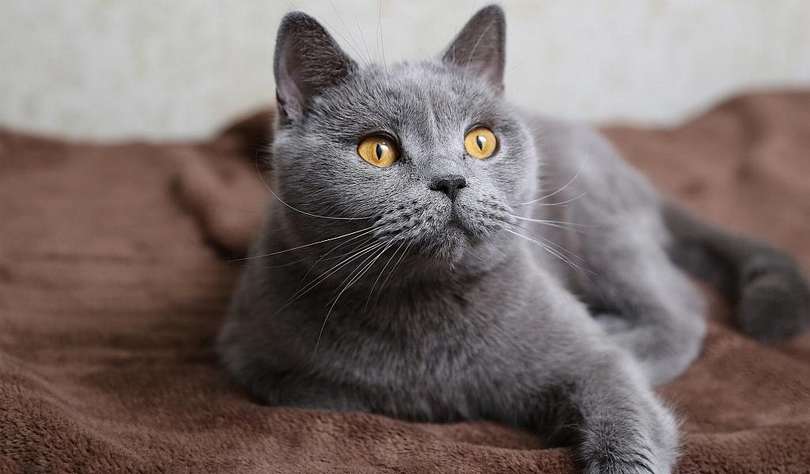
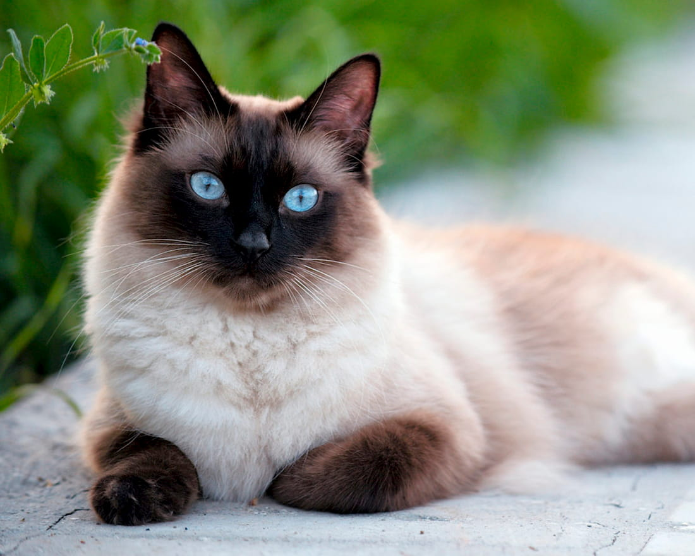
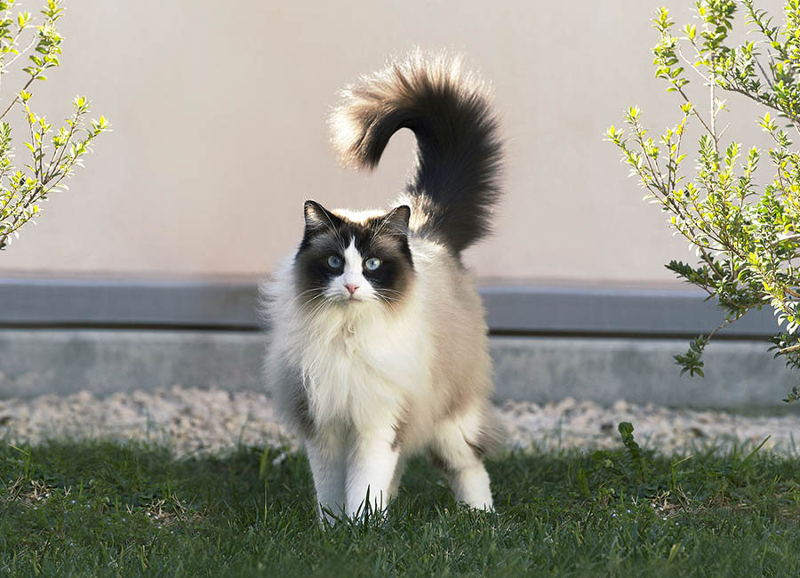

Найпопулярніші породи котів у світі
Кішка – одна з найперших тварин, яких людина приручила. Практично всі діти в дитинстві просять завести маленьке пухнасте кошеня. Цих милих тварин люблять як дорослі, так і діти.
Коти різних порід відрізняються розміром, вагою, довжиною шерсті, забарвленням, характером і темпераментом. Є серед них і такі, які вважаються найпопулярнішими і найбільш улюбленими серед поціновувачів цих тварин у всьому світі.
Британська короткошерста
Вони, напевно, є власниками найбільш щільного і густого хутра серед котячих. Через це їх часто порівнюють з плюшевими іграшками.
Вони знають собі ціну і часто здаються оточуючим справжніми егоїстами. Якщо ці кішки і дозволяють взяти себе на руки, то це більше схоже на поблажку до вас. Але частіше вони не будуть задоволені проявам ласки з боку людини. Часто проявляють норовливість, всім своїм виглядом показують свою аристократичність.
Британцям не властиво проявляти агресію, вони стримані і зберігають спокій в будь-якій ситуації. Ця порода відмінно переносить довгу самотність, що підходить працюючим людям.
Сіамська порода
Варто тільки поглянути в ці чисті блакитні очі, і можна закохатися практично з першого погляду. Шерсть у кішок цієї породи коротка і досить щільна, окрас в основній частині тіла бежевий, а на мордочці, кінчиках лап і хвоста – темно-коричневий.
Батьківщиною породи вважається Таїланд. Цих кішок люблять не тільки за яскраву зовнішність, але і за характер. Дехто помилково вважає, що всі сіамці дуже агресивні, але насправді це не так. Хоча порода і відрізняється схильністю до ревнощів та гострим почуттям власництва.
Бенгальська кішка

Ця порода була виведена штучно, шляхом схрещування дикої і домашньої кішки. Завжди привертають увагу завдяки своєму незвичайному окрасу, що схожий на окрас леопарда.
Шерсть у бенгальської кішки розкішна: щільна, густа, шовковиста на дотик, зі специфічним блиском – гліттером. Забарвлення буває трьох видів: розетчасте, плямисте або мармурове, колір шерсті золотисто-коричневий ( «золото») або сріблясто-сірий («срібло»). Вони дуже активні і грайливі аж до самої старості. Через це можуть ставати частою причиною безладу в будинку. На відміну від інших порід, бенгальські кішки проявляють інтерес до води і не бояться її.
Регдол
Назва цієї породи з англійської мови перекладається як «лялька з тканини». Вони настільки спокійні і добродушні, що їх завжди можна брати на руки, гладити, обіймати і не переживати через ризик бути подряпаним. Регдол прекрасно уживається з дітьми і беззаперечно терпить всі їхні забаганки та ігри.
Цікава особливість породи – це своєрідна загальмованість, розслабленість і інертність м’язів. Кішка цієї породи погодиться з будь-яким положення тіла, яке їй запропонує господар.
Мейн-кун

Мейн-кун є найбільшою породою котів з усіх існуючих. Можуть досягати до 15 кг ваги. Є власниками великого, м’язистого тіла з великими лапами. Очі округлі і обов’язково близько посаджені. Шерсть шовковиста, в кілька шарів. Відмінна риса мейн-кунів – китички на вухах, як у рисі.
Незважаючи на грізний вигляд, ці тварини мають досить спокійний характер. Вони ласкаві зі своїми господарями і з усіма домочадцями, але обережні по відношенню до малознайомих і чужих людей.
Мейн-куни миролюбні, поступливі, слухняні і розумні. Вони не люблять замкнутих просторів, тому не залізають в шафи і коробки. Такий вихованець швидко привчиться до лотка і буде використовувати кігтеточку замість дивана.